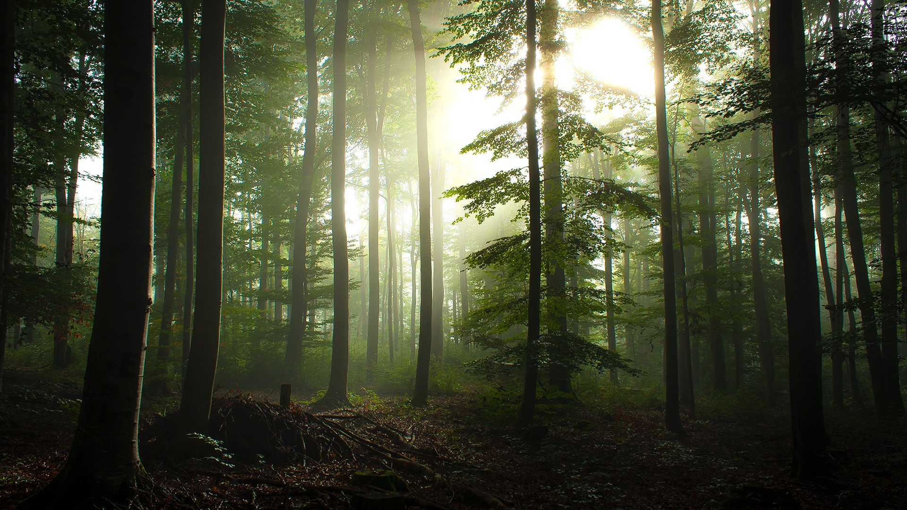
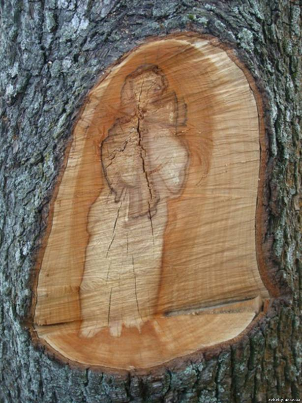

МИСТИКА
Беловежская пуща.
Тайна аномальных зон
Лес с многовековой историей
С полным основанием Беловежскую пущу, если подойти к ней именно с данной точки зрения, можно отнести к так называемым «местам силы». По ее территориям проходит геоактивная зона (или геологический разлом). Считается, что вдоль данного разлома пролегает линия с излучающейся положительной энергией. В Беловежской пуще же и окрестностях ее можно найти множество родников, церквей, необычных валунов-камней (старых святилищ язычников). Также здесь можно найти более тысячи патриархов леса (деревьев-великанов). Началась история одного из самых старых в мире заповедников еще в далеком 1409 году.
Может быть, царственные особы, короли и князья того времени также знали о высокой положительной энергии данного места, поэтому и выбрали именно его для восстановления сил, охоты и отдыха. Если заглянуть в глубокую историю пущи, то можно отметить, что почти все правители, которым это «место силы» принадлежало (еще начиная с Владимира Мономаха), непременно бывали здесь. Было так видимо не только поэтому, что в нетронутых лесах пущи водилось множество дикого зверя, соответственно и выбор для охоты мест был огромный. Ехать при этом далеко также не было необходимо. Вельможи тем не менее тянулись к этому загадочному месту, здесь жили и привозили в дальнейшем близких. Впоследствии для того, чтобы с комфортом разместиться, стали строить дворцы и дома.
Природная «икона» на дереве
В Беловеже рядом с царским дворцом, который был построен на холме вместо старых палат королей Польши, растут многовековые старые дубы. Эти деревья на себя обратили особое внимание в 1991 году, когда на одном из деревьев проявилось некое подобие «иконы». Возникла эта икона после лечения одного из деревьев на месте отпиленной ветки.
Ассоциировался данный образ более с Гавриилом архангелом – мужчиной лет 40 с густыми ниспадающими темными волосами до плеч. Пересекал чело архангела глубокий шрам, губы были сложены в грустную усмешку. Эта удивительная природная «икона» поглотила настолько приезжающих туристов, что на некоторое время по популярности заслонила обитающих зубров в пуще и другие удивительные природные объекты.
Некоторые люди, которые стояли с «иконой» возле дуба, видели удивительные видения. Некоторые, к примеру, рассказывали об убегающих фигурах, некоторые о казни Николая второго. При прикосновении к данной иконе люди рассказывали о пульсации и покалывании в пальцах. Явление подобных образов в народе часто связывали со значительными событиями. Люди говорили, что вот-вот в Беловежской пуще или ближайших местах случится что-то необычное. Именно поэтому, когда уже в конце года в Вискулях произошел развал Советского союза, люди это восприняли как сбывшееся пророчество.